MapNG
MapNGA tester's request
Waypoints in road mode
- Click to lead the road on. With a road picked, a click farther along leads it on to there along the roads, and the old end stays as a waypoint. Drag a waypoint to lead the road through another spot; double-click it to remove it. No more dragging one handle over and over round every turn.
- A stray click no longer clears the road. Clicking the map near the end used to pick a new road in its place; the button in the panel starts again.
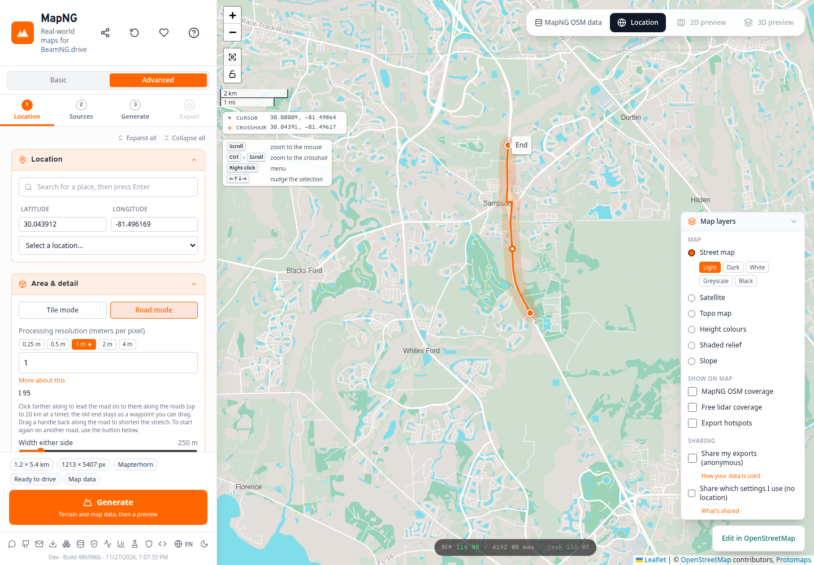
From a tester's map of Kaunas
Markings on the road as drawn
- Junctions shaped as one. The ground under a junction took each spot's height from the nearest road alone, so where roads meet at slightly different grades it stepped along lines running out from the junction's middle, ridges under the asphalt. The roads' heights are now blended across the junction (a tester's junction in Kaunas).
- No trench beside a raised road. Where a road is built above the ground it was first levelled into (a main road held to its grade down a steep valley side on 30 m data), the old levelled strip was left as a trench along its uphill side. That strip is now filled up to the road (found on our own test in Sabile, Latvia).
- Parking that changes along a street. A street mapped as several ways took the first way's parking all the way along: perpendicular parking, then parallel, then perpendicular again came out perpendicular throughout. Each way now keeps its own, wide and striped where the cars park across, narrower where they park along (a tester's apartment-block street in Kaunas).
- Service roads in the AI's road graph. Driveways, alleys, car-park aisles and estate roads were kept out of traffic on purpose; now the AI can drive them, preferring the streets. Driveways and private roads stay gated and hidden from the navigation display (a tester's apartment-complex roads).
- Tagged widths kept. A road's
widthtag is kept down to 2.5 m whatever its class: a one-lane residential street tagged 2.8 m came out 4.4 m, the class's minimum. - Lane widths that change along a road.
width:lanes:startandwidth:lanes:end(with:forwardand:backward) are read: each lane widens or narrows from its width at the way's first node to its width at the last, the road's edges, its lane lines and its placement offset with it. A junction part way along no longer restarts the change, for these and forplacement:start/:end. With them, a mapper can fix a lane that opens or closes along a road in OSM itself (a tester's suggestion). - A road shifting sideways at a joint. Where one lane ends on the left as another begins on the right, the road stays as wide but moves over. It stepped sideways at the joint with grass in the step; it now eases across over a lane-change run, its lane lines with it.
- Stop lines and zebra crossings on placed roads. On a road drawn off its mapped line by placement tags, the stop lines at traffic lights and the zebra crossings were still laid across the mapped line, running over the median and onto the grass. They now cross the road where it is drawn, curb to curb.
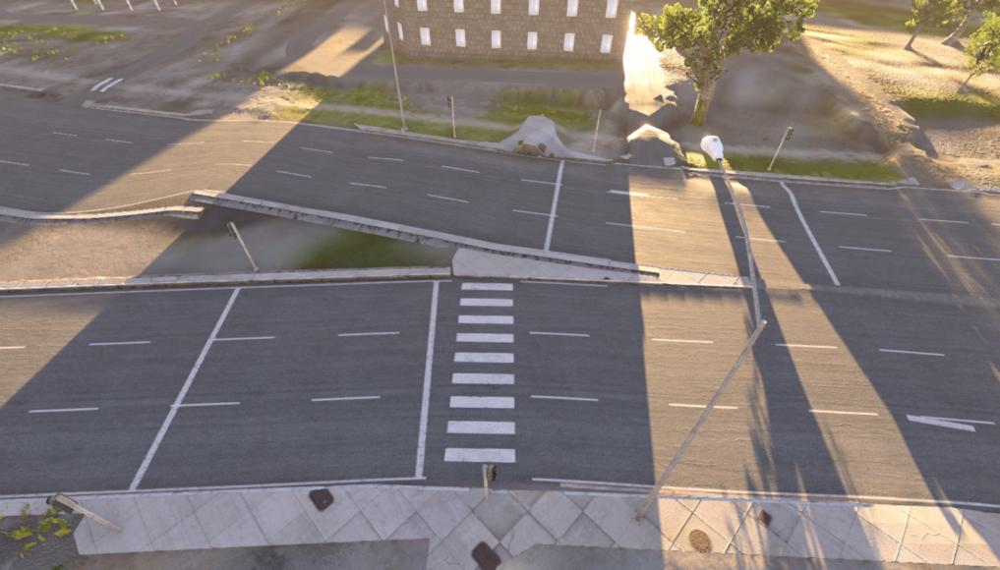
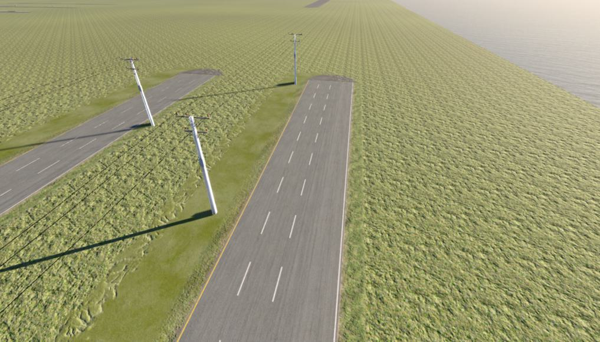
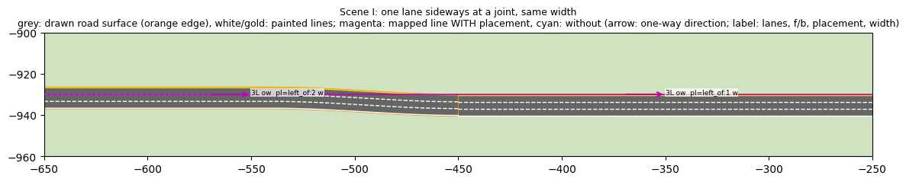
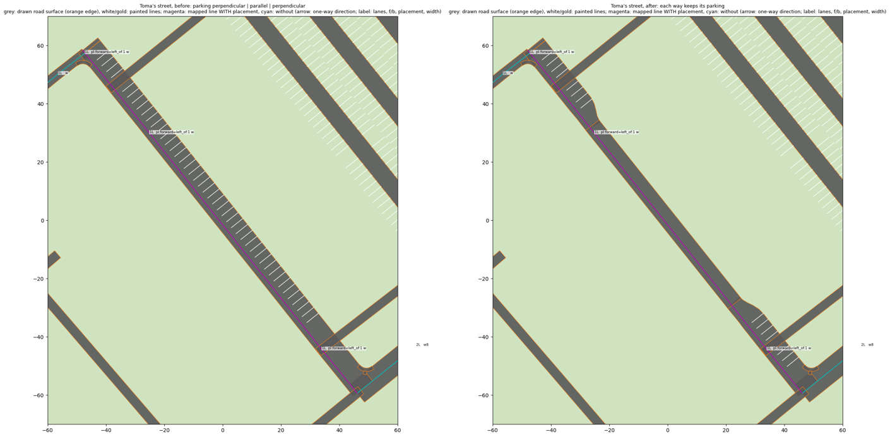
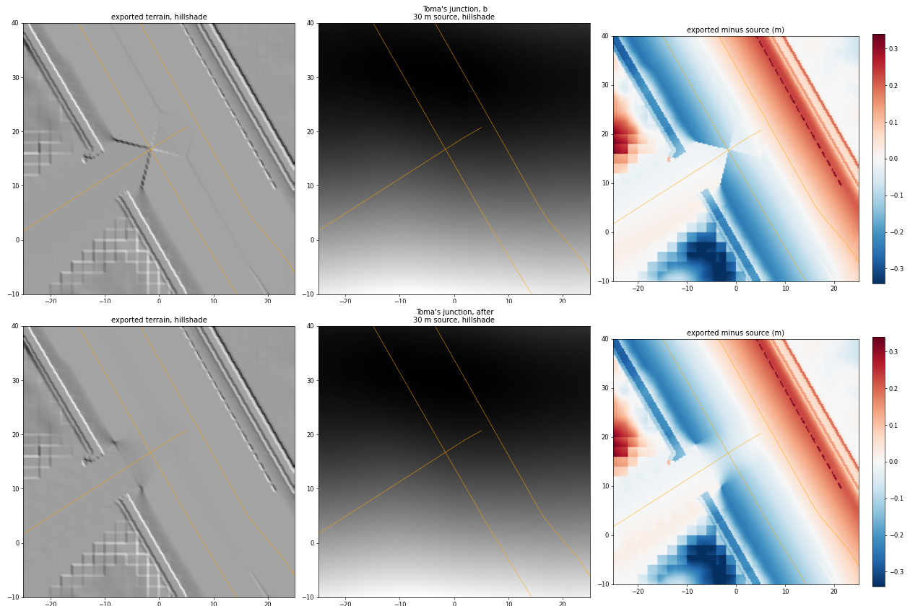
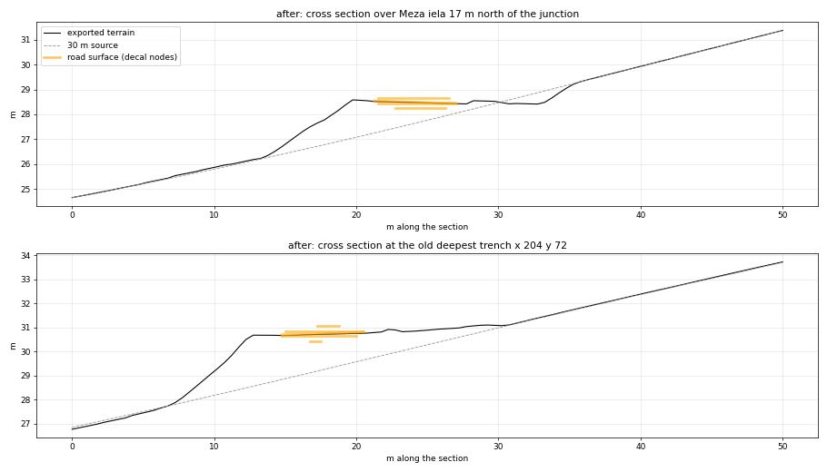
From a tester's map of St. Augustine
Sidewalks flush with their lawns
- Sidewalks beside a raised road. Where a street is built above the ground it was first levelled into, its sidewalks stayed at the old ground, in a slot almost a metre under the road along both edges. They now sit at the road's height. Near a bridge's wing walls they keep the ground for now.
- Bike-path sidewalks in decal mode. With sidewalks drawn as decals, a sidewalk tagged on a cycleway or service road (
sidewalk=leftand the like) did not render; it is drawn as a strip now (a tester's report). - Paving along a shore ends in a straight line. Paving by the sea was trimmed pixel by pixel on the terrain's 1 m sea mask: along a diagonal seawall it stopped in a sawtooth of 1 m teeth whose sides showed as dark triangles. The mask is now smoothed and blended, and the edge follows the coast.
- Sidewalks set back from the road get a verge. A sidewalk mapped on its own more than 6 m from the road's edge has grass in front of it, houses near or not; nearer, the strip is paved to the curb as before (it is mostly a parking lane). St. Augustine's bayfront sidewalk along the seawall came out a wide paved strip with a sawtooth edge where the real ground is grass and palms.
- Paths round a lawn mesh cleanly. Where sidewalks and paths close a loop round a lawn or a bed, the paving came out in spikes and gaps in places: the slab mesh is cut into 4 m squares, and a square holding part of the enclosed lawn was triangulated wrong. Those squares are now worked out as the paving less the lawn first. Found in a college courtyard in St. Augustine, once the street corners beside it were joined.
- No more step down to the grass. A sidewalk stood 10 to 20 cm proud of the lawn along its back edge, on nearly every street: the ground round the paving was graded from under the slab. The lawn now meets the sidewalk's back edge flush, as a real one sits in its grass. Banks and hillsides beside a sidewalk keep their slope.
- No strip of bare earth by a town road. The blend from a road's edge into the ground beside it came out as dirt on some roads at random, also in town, between the road and its sidewalk. In towns it is now always asphalt into grass, and a concrete road has a clean edge with no blend at all.
- Corners joined. Where no rounded corner fits clear of the roads because the corner's own streets are in the way (a street drawn in pieces of different widths, or its line bending into the junction), the corner was given up: the two sidewalks ended square with grass between. It is now paved square instead, up to the curb along the road's edge. On test maps this joins 2 to 17 % of corners; a corner with another road across it, such as a slip lane, stays open.
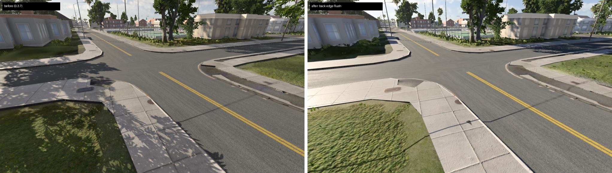
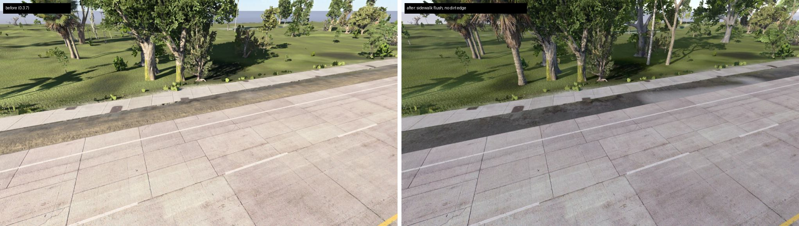
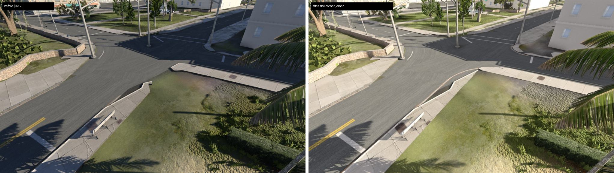
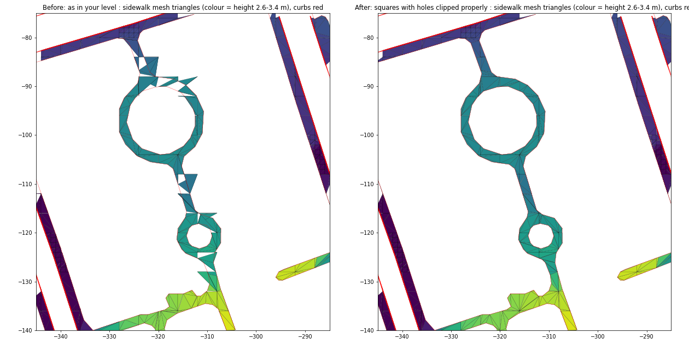
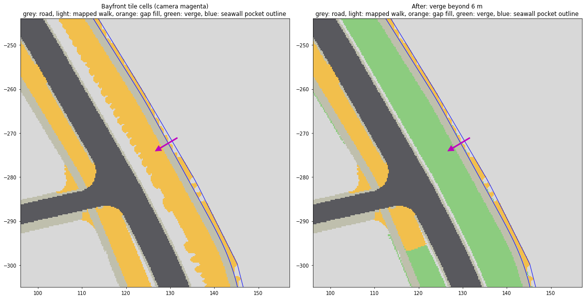
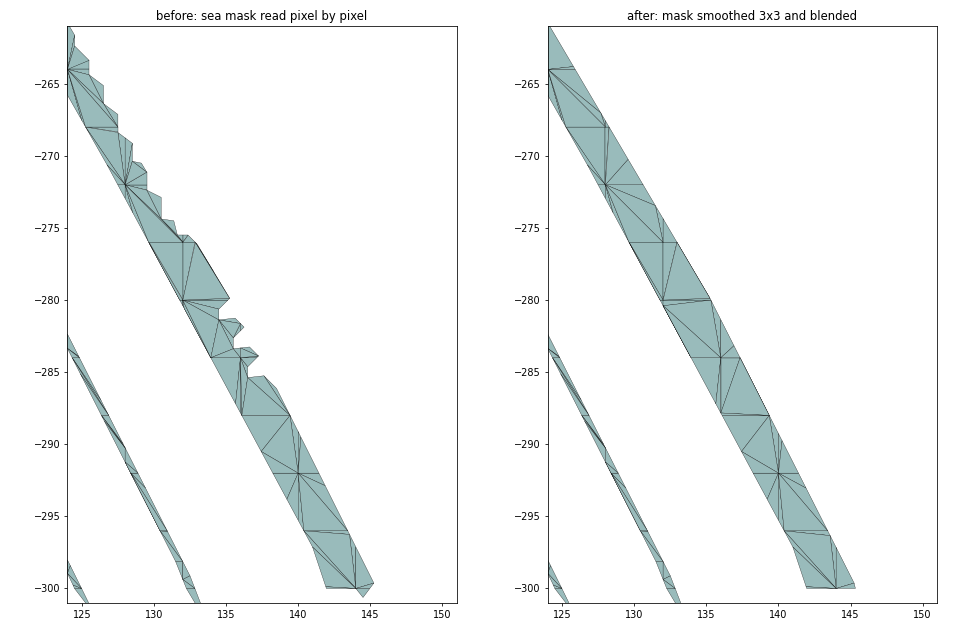
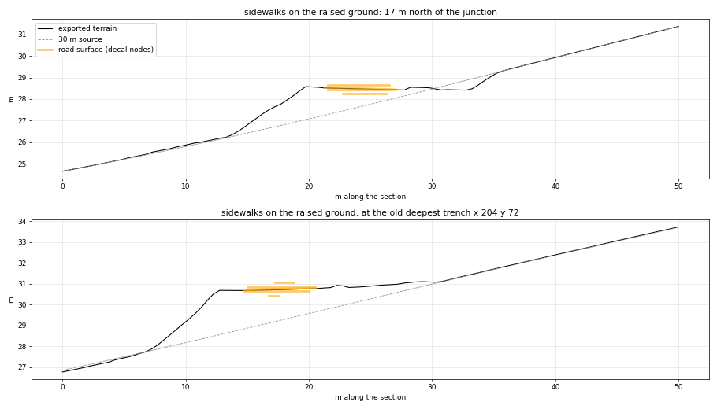